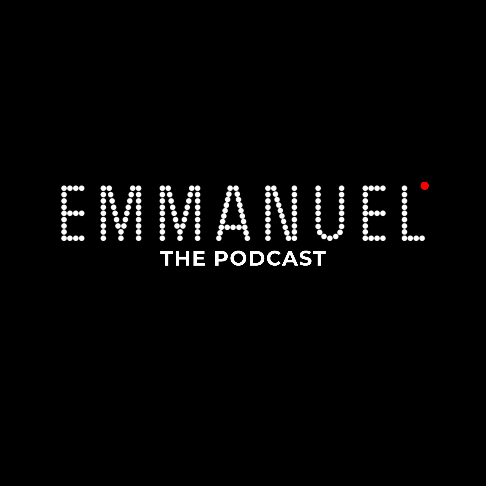

Costruisco PWA focalizzate, identità visive precise e racconto di tech ogni weekend.
App installabili, cache offline e performance native. Stack minimale, risultato solido.
Palette, tipografia, logomark. Identità che non si scorda e non invecchia in tre mesi.
Tool focalizzati che risolvono un problema esatto. Niente bloat.

Tech, tool, design. Ogni weekend.
Freelance disponibile per sviluppo PWA, brand identity e consulenze di design. Rispondo entro 24h.